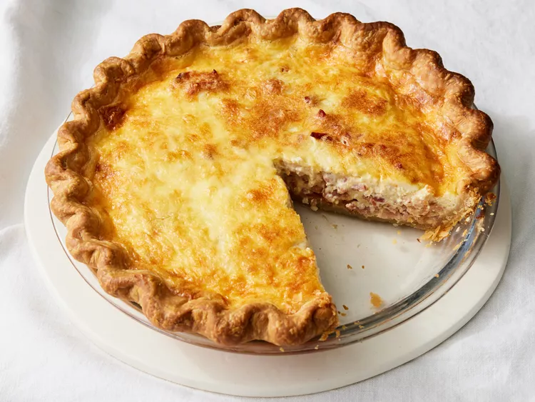

Quiche Lorraine
Home

Description
Quiche Lorraine is a French tart made with eggs, cream, pork, and sometimes cheese.
The dish is native to Lorraine, a region in Northeastern France.
It can be served warm or cold.
Ingredients
- bacon
- swiss cheese
- onion
- prepared pie crust
- light cream
- eggs
- salt
- white sugar
- pepper
Method
- Whisk teriyaki sauce, lemon juice, garlic, and sesame oil together in a bowl and
pour into a resealable plastic bag. Add chicken, coat with marinade, squeeze out
excess air, and seal the bag. Marinate in the refrigerator for at least 1 hour
to overnight, turning every so often.
- When ready to cook, preheat an outdoor grill for high heat and l
ightly oil the grate.
- Remove chicken from marinade and shake off excess. Discard remaining marinade.
- Cook chicken on the preheated grill until no longer pink in the center and the
juices run clear, 6 to 8 minutes per side. An instant-read thermometer inserted
into the center should read at least 165 degrees F (74 degrees C).